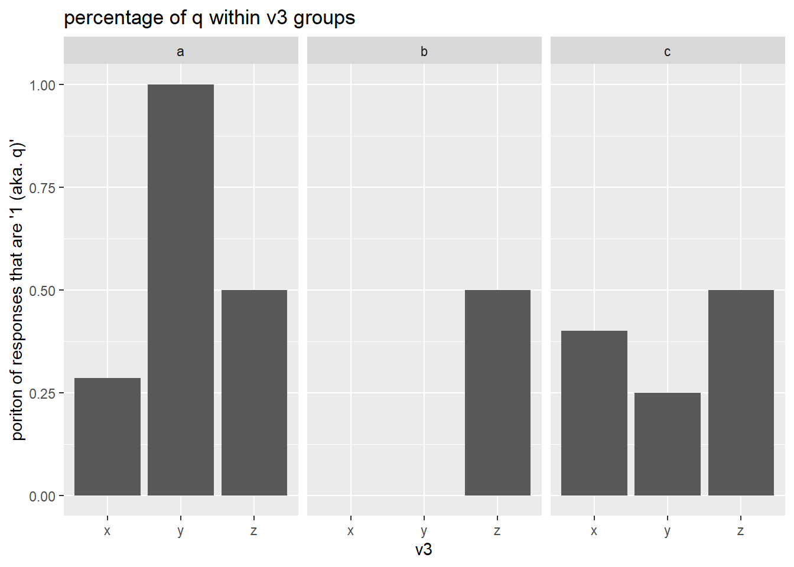
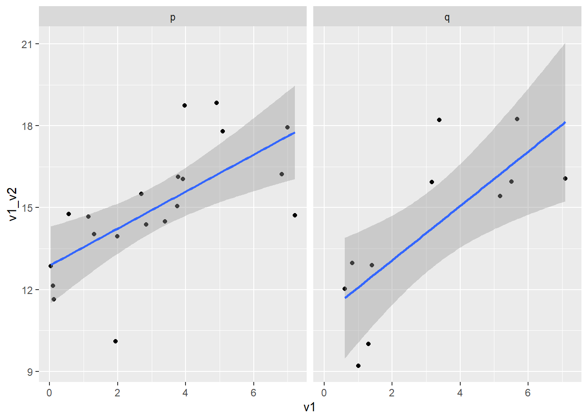

Translation Syntax Example
Package Deposit
## install.packages("descr")
library(descr) # freq()
## install.packages("ggplot2")
library(ggplot2)Data Management
Data Management
create a data set with categorical and numeric variables and save as .csv
# numerical variable
v1 <- runif(100, 0, 7.5) # generate 10 random numbers between 0 and 7.5
v2 <- runif(100, 7.5, 15)
# categorical variable
v3 <- sample(c("x", "y", "z", "n"), size = 100, replace = T) # randomly sample 10 observations out of x, y, z
v4 <- sample(c("a", "b", "c", "n"), size = 100, replace = T)
v5 <- sample(c("p", "q", "n"), size = 100, replace = T)
# combine variables into a dataframe
ie.df <- data.frame(v1, v2, v3, v4, v5)
# save as csv
write.table(ie.df, file = "C:\\Users\\tonyr\\Downloads\\QAC201Z_Material\\example.csv", sep = ",", row.names = F)sort the data
sort by ascending v1
ie.df <- ie.df[order(ie.df$v1, decreasing = F), ]select responses
subset observations with x
ie.x <- ie.df[ie.df$v3 == "x", ]subset observations with x and a
ie.xa <- ie.df[ie.df$v3 == "x" & ie.df$v4 == "a", ]Deal with missing data
label missing data as NA
- v3, v4, v5 “n” codes for missing data
ie.df$v3[ie.df$v3 == "n"] <- NA
ie.df$v4[ie.df$v4 == "n"] <- NA
ie.df$v5[ie.df$v5 == "n"] <- NAsubset observations without NA values in any variables
na.omit(ie.df)## v1 v2 v3 v4 v5
## 76 0.5439632 10.526993 x a p
## 8 0.6223002 8.781400 z c q
## 78 0.8696228 13.465702 z c q
## 13 0.9014432 11.940254 x a q
## 20 1.0126329 9.739317 y c p
## 25 1.2602998 7.872801 x b p
## 45 1.2925516 13.328807 z a p
## 47 1.4642364 10.460952 x c p
## 59 1.6358610 13.181592 y b p
## 23 1.7298532 13.347782 y a q
## 50 1.8828861 10.295952 x b q
## 27 2.0977711 12.538427 z b p
## 43 2.4600593 9.452088 x c p
## 100 2.5554538 9.413034 y b q
## 62 2.5640064 9.396287 z a p
## 98 2.7442309 8.391166 z a q
## 99 3.6845206 12.524567 z b p
## 70 3.7248786 8.711390 z b p
## 24 4.3087438 8.748969 x a p
## 36 4.5468256 11.901488 z a q
## 39 4.8308321 11.265827 x a p
## 37 4.9960887 9.103472 y a q
## 12 5.5298397 11.146303 z c p
## 41 5.7610299 10.043061 x a q
## 53 5.9707851 11.176072 x a p
## 91 6.1953973 7.906485 z c p
## 31 6.2477178 11.222864 x c p
## 2 6.3020440 14.162328 y b p
## 88 6.4054448 14.744155 y a p
## 96 6.4157509 11.482524 x a q
## 44 6.8318539 12.359065 z c q
## 83 7.0084122 14.908750 y b p
## 66 7.0154899 13.641515 y a q
## 34 7.0312311 13.949302 y a p
## 89 7.0757013 12.591731 y b q
## 33 7.2349210 13.751305 x a p
## 15 7.2773424 12.463901 z c psubset observations without NA values in selected variable
ie.df[!is.na(ie.df$v3),]## v1 v2 v3 v4 v5
## 69 0.0531733 14.689241 z <NA> <NA>
## 16 0.2635248 12.673401 x <NA> p
## 46 0.4455625 9.484579 x c <NA>
## 76 0.5439632 10.526993 x a p
## 8 0.6223002 8.781400 z c q
## 84 0.6603392 8.926259 y b <NA>
## 78 0.8696228 13.465702 z c q
## 13 0.9014432 11.940254 x a q
## 20 1.0126329 9.739317 y c p
## 25 1.2602998 7.872801 x b p
## 45 1.2925516 13.328807 z a p
## 95 1.3260077 14.749941 z b <NA>
## 40 1.4064533 14.613876 y b <NA>
## 47 1.4642364 10.460952 x c p
## 11 1.6094833 11.705772 y a <NA>
## 59 1.6358610 13.181592 y b p
## 73 1.6589184 9.922789 z <NA> q
## 72 1.7201188 10.000664 x c <NA>
## 23 1.7298532 13.347782 y a q
## 50 1.8828861 10.295952 x b q
## 94 1.9550416 12.065986 y <NA> <NA>
## 30 2.0426610 10.159956 z <NA> <NA>
## 27 2.0977711 12.538427 z b p
## 57 2.2932888 10.382467 x <NA> <NA>
## 43 2.4600593 9.452088 x c p
## 100 2.5554538 9.413034 y b q
## 62 2.5640064 9.396287 z a p
## 98 2.7442309 8.391166 z a q
## 5 2.8439740 13.401367 y c <NA>
## 77 2.9995693 7.657407 z b <NA>
## 92 3.3370099 11.226241 x <NA> p
## 54 3.3703601 7.915724 z <NA> q
## 55 3.3807494 8.562767 x <NA> q
## 67 3.4977196 14.851104 y c <NA>
## 61 3.6676721 14.534587 z <NA> q
## 99 3.6845206 12.524567 z b p
## 70 3.7248786 8.711390 z b p
## 21 3.8474180 10.378181 x b <NA>
## 51 3.8975389 10.137778 x <NA> <NA>
## 85 4.2239855 10.686755 x <NA> p
## 24 4.3087438 8.748969 x a p
## 90 4.3682498 14.160363 x <NA> q
## 29 4.5196257 9.284282 x <NA> q
## 36 4.5468256 11.901488 z a q
## 14 4.5720279 13.965271 z <NA> p
## 65 4.6422812 12.004412 x <NA> <NA>
## 10 4.7876439 8.249826 x <NA> <NA>
## 39 4.8308321 11.265827 x a p
## 37 4.9960887 9.103472 y a q
## 56 5.0741226 7.797710 y <NA> p
## 12 5.5298397 11.146303 z c p
## 19 5.6880630 10.668361 z <NA> <NA>
## 41 5.7610299 10.043061 x a q
## 52 5.8120882 11.865846 y <NA> q
## 53 5.9707851 11.176072 x a p
## 3 6.0371447 7.827569 y <NA> <NA>
## 28 6.0931256 14.746412 x <NA> q
## 91 6.1953973 7.906485 z c p
## 31 6.2477178 11.222864 x c p
## 2 6.3020440 14.162328 y b p
## 88 6.4054448 14.744155 y a p
## 96 6.4157509 11.482524 x a q
## 18 6.4206467 8.765332 z b <NA>
## 9 6.5638949 9.834613 x a <NA>
## 44 6.8318539 12.359065 z c q
## 81 6.8350209 7.757119 z c <NA>
## 83 7.0084122 14.908750 y b p
## 66 7.0154899 13.641515 y a q
## 34 7.0312311 13.949302 y a p
## 89 7.0757013 12.591731 y b q
## 93 7.1077531 9.008353 z c <NA>
## 33 7.2349210 13.751305 x a p
## 15 7.2773424 12.463901 z c p
## 86 7.3467389 11.123480 x <NA> p
## 42 7.3513486 12.167451 z <NA> pcreate secondary variables
bin v1 into 4 sections
ie.df$v6[ie.df$v1 < 2] <- 1
ie.df$v6[ie.df$v1 >=2 & ie.df$v1 < 4] <- 2
ie.df$v6[ie.df$v1 >= 4 & ie.df$v1 < 6] <- 3
ie.df$v6[ie.df$v1 >= 6 & ie.df$v1 < 8] <- 4combine v3 and v4 into v7
ie.df$v7[is.na(ie.df$v3) | is.na(ie.df$v4)] <- NA
ie.df$v7[ie.df$v3 == "x" & ie.df$v4 == "a"] <- "xa"
ie.df$v7[ie.df$v3 == "x" & ie.df$v4 == "b"] <- "xb"
ie.df$v7[ie.df$v3 == "x" & ie.df$v4 == "c"] <- "xc"
ie.df$v7[ie.df$v3 == "y" & ie.df$v4 == "a"] <- "ya"
ie.df$v7[ie.df$v3 == "y" & ie.df$v4 == "b"] <- "yb"
ie.df$v7[ie.df$v3 == "y" & ie.df$v4 == "c"] <- "yc"
ie.df$v7[ie.df$v3 == "z" & ie.df$v4 == "a"] <- "za"
ie.df$v7[ie.df$v3 == "z" & ie.df$v4 == "b"] <- "zb"
ie.df$v7[ie.df$v3 == "z" & ie.df$v4 == "c"] <- "zc"sum up v1 and v2 into v7
ie.df$v8 <- ie.df$v1 + ie.df$v2rename variable
names(ie.df)[names(ie.df) == "v8"] <- "v1_v2"
names(ie.df)[names(ie.df) == "v7"] <- "v3_v4"
names(ie.df)[names(ie.df) == "v6"] <- "v1_level"label variable values
levels(ie.df$v1_level) <- c("lowest", "low", "high", "highest")Univariate Analysis
Univariate Analysis
Categorical Variables
frequency
# frequency
#library(descr)
freq(as.ordered(ie.df$v3_v4))
## as.ordered(ie.df$v3_v4)
## Frequency Percent Valid Percent Cum Percent
## xa 9 9 17.647 17.65
## xb 3 3 5.882 23.53
## xc 5 5 9.804 33.33
## ya 6 6 11.765 45.10
## yb 7 7 13.725 58.82
## yc 3 3 5.882 64.71
## za 4 4 7.843 72.55
## zb 6 6 11.765 84.31
## zc 8 8 15.686 100.00
## NA's 49 49
## Total 100 100 100.000frequency bar plot w. ggplot
#library(ggplot2)
ggplot(data = na.omit(ie.df)) + # na.omit() removes any observations containing NA
geom_bar(aes(x = v3_v4)) +
ggtitle("v3_v4 frequency barplot")
Numeric Variables
mean
mean(ie.df$v1_v2, na.rm = T)## [1] 15.04433standard deviation
sd(ie.df$v1_v2, na.rm = T)## [1] 3.120789histogram w. ggplot
ggplot(data = ie.df)+
geom_histogram(aes(x = v1_v2))+
ggtitle("v1_v2 histogram")
Bivariate Analysis
Bivariate Analysis
Categorical-Categorical (crosstabs)
crosstabs
table(ie.df$v3, ie.df$v4)##
## a b c
## x 9 3 5
## y 6 7 3
## z 4 6 8column proportions
prop.table(table(ie.df$v3, ie.df$v4), 2) # col proportions##
## a b c
## x 0.4736842 0.1875000 0.3125000
## y 0.3157895 0.4375000 0.1875000
## z 0.2105263 0.3750000 0.5000000row proportions
prop.table(table(ie.df$v3, ie.df$v4), 1) # row proportions##
## a b c
## x 0.5294118 0.1764706 0.2941176
## y 0.3750000 0.4375000 0.1875000
## z 0.2222222 0.3333333 0.4444444cell proportions
prop.table(table(ie.df$v3, ie.df$v4)) # cell proportions##
## a b c
## x 0.17647059 0.05882353 0.09803922
## y 0.11764706 0.13725490 0.05882353
## z 0.07843137 0.11764706 0.15686275Graphs
for binary categorical response
# for binary categorical response
graph_data <- data.frame(v3 = na.omit(ie.df)$v3,
v5 = ifelse(na.omit(ie.df)$v5 == "p", 0, 1))
ggplot(data = graph_data)+
stat_summary(aes(x=v3, y = v5), fun = "mean", geom = "bar")+
ylab("poriton of responses that are '1 (aka. q)'")+
ggtitle("percentage of q within v3 groups")
for multi-level categorical responses
# stacked barplot for mutli-level categorical responses
graph_data <- data.frame(v4 = c(rep("a", 3), rep("b", 3), rep("c", 3)),
v3 = rep(c("x", "y", "z"), 3),
value = as.numeric(table(ie.df$v3, ie.df$v4)))
ggplot(data = graph_data, aes(fill = v4, x = v3, y = value))+
geom_bar(position = "stack", stat = "identity")+
ylab("number of observations")+
ggtitle("number of subjects at each response level within each group")
Numeric-Categorical
stats by group
Mean
by(ie.df$v1, ie.df$v3_v4, mean, na.rm = T)## ie.df$v3_v4: xa
## [1] 4.725707
## ---------------------------------------------------------
## ie.df$v3_v4: xb
## [1] 2.330201
## ---------------------------------------------------------
## ie.df$v3_v4: xc
## [1] 2.467539
## ---------------------------------------------------------
## ie.df$v3_v4: ya
## [1] 4.797932
## ---------------------------------------------------------
## ie.df$v3_v4: yb
## [1] 3.806324
## ---------------------------------------------------------
## ie.df$v3_v4: yc
## [1] 2.451442
## ---------------------------------------------------------
## ie.df$v3_v4: za
## [1] 2.786904
## ---------------------------------------------------------
## ie.df$v3_v4: zb
## [1] 3.375566
## ---------------------------------------------------------
## ie.df$v3_v4: zc
## [1] 5.158641standard deviation
by(ie.df$v1, ie.df$v3_v4, sd, na.rm = T)## ie.df$v3_v4: xa
## [1] 2.435424
## ---------------------------------------------------------
## ie.df$v3_v4: xb
## [1] 1.35032
## ---------------------------------------------------------
## ie.df$v3_v4: xc
## [1] 2.232904
## ---------------------------------------------------------
## ie.df$v3_v4: ya
## [1] 2.534082
## ---------------------------------------------------------
## ie.df$v3_v4: yb
## [1] 2.86074
## ---------------------------------------------------------
## ie.df$v3_v4: yc
## [1] 1.288206
## ---------------------------------------------------------
## ie.df$v3_v4: za
## [1] 1.339393
## ---------------------------------------------------------
## ie.df$v3_v4: zb
## [1] 1.758682
## ---------------------------------------------------------
## ie.df$v3_v4: zc
## [1] 2.779634number of observations
by(ie.df$v1, ie.df$v3_v4, length)## ie.df$v3_v4: xa
## [1] 9
## ---------------------------------------------------------
## ie.df$v3_v4: xb
## [1] 3
## ---------------------------------------------------------
## ie.df$v3_v4: xc
## [1] 5
## ---------------------------------------------------------
## ie.df$v3_v4: ya
## [1] 6
## ---------------------------------------------------------
## ie.df$v3_v4: yb
## [1] 7
## ---------------------------------------------------------
## ie.df$v3_v4: yc
## [1] 3
## ---------------------------------------------------------
## ie.df$v3_v4: za
## [1] 4
## ---------------------------------------------------------
## ie.df$v3_v4: zb
## [1] 6
## ---------------------------------------------------------
## ie.df$v3_v4: zc
## [1] 8Graph
barplot
ggplot(data = na.omit(ie.df))+
stat_summary(aes(x = v3_v4, y = v1), fun = "mean", geom = "bar")+
ggtitle("mean barplot")
boxplot
ggplot(data = na.omit(ie.df))+
geom_boxplot(aes(x = v3_v4, y = v1))+
ggtitle("boxplot")
Numeric-Numeric
ggplot(data = na.omit(ie.df), aes(x = v1, y = v1_v2))+
geom_point()+
geom_smooth(method = "lm")+
ggtitle("Correlation between v1_v2 and v1")
Multivariate Analysis (Bivariate by subpopulation)
Multivariate Analysis
Categorical-Categorical
C \(\Rightarrow\) C
binary categorical response
graph_data <- data.frame(v3 = na.omit(ie.df)$v3,
v5 = ifelse(na.omit(ie.df)$v5 == "p", 0, 1),
v4 = na.omit(ie.df)$v4)
ggplot(data = graph_data)+
stat_summary(aes(x=v3, y = v5), fun = "mean", geom = "bar")+
facet_grid(.~v4)+
ylab("poriton of responses that are '1 (aka. q)'")+
ggtitle("percentage of q within v3 groups")
multi-level categorical response
graph_data <- data.frame(v4 = rep(c(rep("a", 3), rep("b", 3), rep("c", 3)), 2),
v3 = rep(c("x", "y", "z"), 6),
value = c(as.numeric(table(ie.df[ie.df$v5 == "p",]$v3, ie.df[ie.df$v5 == "p",]$v4)),
as.numeric(table(ie.df[ie.df$v5 == "q",]$v3, ie.df[ie.df$v5 == "q",]$v4))),
v5 = c(rep("p", 9), rep("q", 9)))
ggplot(data = graph_data)+
geom_bar(position = "stack", aes(fill = v4, x = v3, y = value), stat = "identity")+
facet_grid(.~v5)+
ylab("number of observations")+
ggtitle("number of subjects at each response level within each group")
Numeric-Categorical
C \(\Rightarrow\) N
mean by group
# mean by group
ftable(by(ie.df$v1_v2, list(ie.df$v3_v4, ie.df$v5), mean, na.rm = T))## p q
##
## xa 15.671682 15.514688
## xb 9.133101 12.178838
## xc 13.769306 NA
## ya 21.065067 16.611400
## yb 19.066329 15.817960
## yc 10.751949 NA
## za 13.290826 13.791855
## zb 14.427185 NA
## zc 16.839756 14.309981boxplot
ggplot(data = na.omit(ie.df)) +
geom_boxplot(aes(x = v3_v4, y = v1_v2))+
facet_grid(.~v5)+
ggtitle("")
Numeric-Numeric
N \(\Rightarrow\) N
ggplot(data = na.omit(ie.df), aes(x = v1, y = v1_v2))+
geom_point()+
geom_smooth(method = "lm")+
facet_grid(.~v5)
Hypothesis Testing
Hypothesis Testing
Categorical-Categorical (\(\chi^2\))
\(\chi^2\) Test (C \(\Rightarrow\) C)
Bivariate
chi-square
# chisquare
chisq.test(na.omit(ie.df)$v4, na.omit(ie.df)$v3)##
## Pearson's Chi-squared test
##
## data: na.omit(ie.df)$v4 and na.omit(ie.df)$v3
## X-squared = 6.5933, df = 4, p-value = 0.159chi-square cell counts
chisq.test(na.omit(ie.df)$v4, na.omit(ie.df)$v3)$observed## na.omit(ie.df)$v3
## na.omit(ie.df)$v4 x y z
## a 8 5 4
## b 2 5 3
## c 3 1 6posthoc (for more than two levels)
source("https://raw.githubusercontent.com/PassionDrivenStatistics/R/master/ChiSquarePostHoc.R")
chisq.post.hoc(chisq.test(na.omit(ie.df)$v4, na.omit(ie.df)$v3)$observed,
popsInRows = F,
control = "bonferroni")## Adjusted p-values used the bonferroni method.## comparison raw.p adj.p
## 1 x vs. y 0.3383 1.0000
## 2 x vs. z 0.3603 1.0000
## 3 y vs. z 0.1557 0.4672# Pearson Residuals
chisq.test(na.omit(ie.df)$v4, na.omit(ie.df)$v3)$residuals## na.omit(ie.df)$v3
## na.omit(ie.df)$v4 x y z
## a 0.82940045 -0.02404409 -0.80728310
## b -0.80744972 1.17561213 -0.27395616
## c -0.27395616 -1.14426247 1.32652454Multivariate
by(na.omit(ie.df), na.omit(ie.df)$v5, function(x) list(chisq.test(x$v4, x$v3),
chisq.test(x$v4, x$v3)$observed,
prop.table(chisq.test(x$v4, x$v3)$observed, 2)))## na.omit(ie.df)$v5: p
## [[1]]
##
## Pearson's Chi-squared test
##
## data: x$v4 and x$v3
## X-squared = 3.6001, df = 4, p-value = 0.4628
##
##
## [[2]]
## x$v3
## x$v4 x y z
## a 5 2 2
## b 1 3 3
## c 3 1 3
##
## [[3]]
## x$v3
## x$v4 x y z
## a 0.5555556 0.3333333 0.2500000
## b 0.1111111 0.5000000 0.3750000
## c 0.3333333 0.1666667 0.3750000
##
## ---------------------------------------------------------
## na.omit(ie.df)$v5: q
## [[1]]
##
## Pearson's Chi-squared test
##
## data: x$v4 and x$v3
## X-squared = 7.7875, df = 4, p-value = 0.09968
##
##
## [[2]]
## x$v3
## x$v4 x y z
## a 3 3 2
## b 1 2 0
## c 0 0 3
##
## [[3]]
## x$v3
## x$v4 x y z
## a 0.75 0.60 0.40
## b 0.25 0.40 0.00
## c 0.00 0.00 0.60Numeric-Categorical (ANOVA)
ANOVA Test (C \(\Rightarrow\) N)
Bivariate
ANOVA
summary(aov(v1_v2 ~ v3_v4, data = na.omit(ie.df)))## Df Sum Sq Mean Sq F value Pr(>F)
## v3_v4 8 164.6 20.57 1.831 0.113
## Residuals 28 314.6 11.23posthoc (for more than two levels)
TukeyHSD(aov(v1_v2 ~ v3_v4, data = na.omit(ie.df)))## Tukey multiple comparisons of means
## 95% family-wise confidence level
##
## Fit: aov(formula = v1_v2 ~ v3_v4, data = na.omit(ie.df))
##
## $v3_v4
## diff lwr upr p adj
## xb-xa -4.95684023 -13.846638 3.932958 0.6377473
## xc-xa -1.84350363 -9.456272 5.769265 0.9955074
## ya-xa 2.78005753 -3.630467 9.190582 0.8661925
## yb-xa 2.15417196 -4.256353 8.564696 0.9647244
## yc-xa -4.86086000 -16.787776 7.066056 0.9006387
## za-xa -2.07146877 -8.957477 4.814539 0.9817596
## zb-xa -1.18562484 -8.798393 6.427143 0.9998078
## zc-xa -0.03794080 -6.110829 6.034947 1.0000000
## xc-xb 3.11333660 -7.151718 13.378391 0.9808208
## ya-xb 7.73689775 -1.671180 17.144976 0.1730149
## yb-xb 7.11101218 -2.297066 16.519090 0.2581411
## yc-xb 0.09598022 -13.676036 13.867996 1.0000000
## za-xb 2.88537146 -6.852914 12.623657 0.9833902
## zb-xb 3.77121538 -6.493839 14.036270 0.9419429
## zc-xb 4.91889943 -4.262444 14.100243 0.6833416
## ya-xc 4.62356115 -3.588482 12.835605 0.6262513
## yb-xc 3.99767558 -4.214368 12.209719 0.7790809
## yc-xc -3.01735638 -16.001737 9.967025 0.9966033
## za-xc -0.22796514 -8.816326 8.360396 1.0000000
## zb-xc 0.65787878 -8.523465 9.839223 0.9999995
## zc-xc 1.80556283 -6.145714 9.756840 0.9971007
## yb-ya -0.62588557 -7.737724 6.485953 0.9999976
## yc-ya -7.64091753 -19.958983 4.677148 0.5047706
## za-ya -4.85152629 -12.394770 2.691717 0.4576883
## zb-ya -3.96568237 -12.177726 4.246361 0.7861543
## zc-ya -2.81799833 -9.627065 3.991069 0.8928659
## yc-yb -7.01503196 -19.333097 5.303033 0.6125175
## za-yb -4.22564072 -11.768884 3.317603 0.6322499
## zb-yb -3.33979680 -11.551840 4.872247 0.9016702
## zc-yb -2.19211276 -9.001180 4.616954 0.9725340
## za-yc 2.78939124 -9.782682 15.361464 0.9975296
## zb-yc 3.67523516 -9.309146 16.659616 0.9875266
## zc-yc 4.82291920 -7.322857 16.968696 0.9127666
## zb-za 0.88584392 -7.702517 9.474205 0.9999917
## zc-za 2.03352796 -5.224962 9.292018 0.9883138
## zc-zb 1.14768404 -6.803593 9.098961 0.9998912Multivariate
by(na.omit(ie.df), na.omit(ie.df)$v5, function(x) list(aov(v1_v2 ~ v3_v4, data = x),
summary(aov(v1_v2 ~ v3_v4, data = x)),
TukeyHSD(aov(v1_v2 ~ v3_v4, data = x))))## na.omit(ie.df)$v5: p
## [[1]]
## Call:
## aov(formula = v1_v2 ~ v3_v4, data = x)
##
## Terms:
## v3_v4 Residuals
## Sum of Squares 190.5773 133.9635
## Deg. of Freedom 8 14
##
## Residual standard error: 3.093351
## Estimated effects may be unbalanced
##
## [[2]]
## Df Sum Sq Mean Sq F value Pr(>F)
## v3_v4 8 190.6 23.822 2.49 0.0649 .
## Residuals 14 134.0 9.569
## ---
## Signif. codes: 0 '***' 0.001 '**' 0.01 '*' 0.05 '.' 0.1 ' ' 1
##
## [[3]]
## Tukey multiple comparisons of means
## 95% family-wise confidence level
##
## Fit: aov(formula = v1_v2 ~ v3_v4, data = x)
##
## $v3_v4
## diff lwr upr p adj
## xb-xa -6.5385818 -18.830869 5.753705 0.6070631
## xc-xa -1.9023767 -10.097235 6.292481 0.9929555
## ya-xa 5.3933842 -3.995005 14.781774 0.5180205
## yb-xa 3.3946464 -4.800212 11.589505 0.8372815
## yc-xa -4.9197331 -17.212020 7.372554 0.8594819
## za-xa -2.3808565 -11.769246 7.007533 0.9876942
## zb-xa -1.2444979 -9.439356 6.950360 0.9996234
## zc-xa 1.1680734 -7.026785 9.362932 0.9997631
## xc-xb 4.6362051 -8.321003 17.593414 0.9162260
## ya-xb 11.9319660 -1.811229 25.675161 0.1133049
## yb-xb 9.9332282 -3.023980 22.890437 0.2042714
## yc-xb 1.6188487 -14.250426 17.488123 0.9999809
## za-xb 4.1577253 -9.585470 17.900920 0.9652109
## zb-xb 5.2940839 -7.663125 18.251292 0.8464397
## zc-xb 7.7066552 -5.250553 20.663864 0.4768676
## ya-xc 7.2957609 -2.947812 17.539334 0.2737452
## yb-xc 5.2970231 -3.865107 14.459153 0.5104953
## yc-xc -3.0173564 -15.974565 9.939852 0.9928122
## za-xc -0.4784798 -10.722052 9.765093 1.0000000
## zb-xc 0.6578788 -8.504251 9.820009 0.9999987
## zc-xc 3.0704501 -6.091680 12.232580 0.9397091
## yb-ya -1.9987378 -12.242310 8.244835 0.9977816
## yc-ya -10.3131173 -24.056312 3.430078 0.2233176
## za-ya -7.7742407 -18.995512 3.447031 0.3024313
## zb-ya -6.6378821 -16.881455 3.605691 0.3763849
## zc-ya -4.2253108 -14.468883 6.018262 0.8401521
## yc-yb -8.3143795 -21.271588 4.642829 0.3876575
## za-yb -5.7755029 -16.019076 4.468070 0.5400578
## zb-yb -4.6391443 -13.801274 4.522986 0.6609527
## zc-yb -2.2265730 -11.388703 6.935557 0.9905688
## za-yc 2.5388766 -11.204318 16.282072 0.9984791
## zb-yc 3.6752352 -9.281973 16.632444 0.9759020
## zc-yc 6.0878065 -6.869402 19.045015 0.7356238
## zb-za 1.1363586 -9.107214 11.379931 0.9999637
## zc-za 3.5489299 -6.694643 13.792503 0.9285843
## zc-zb 2.4125713 -6.749559 11.574701 0.9845058
##
##
## ---------------------------------------------------------
## na.omit(ie.df)$v5: q
## [[1]]
## Call:
## aov(formula = v1_v2 ~ v3_v4, data = x)
##
## Terms:
## v3_v4 Residuals
## Sum of Squares 22.19355 129.58502
## Deg. of Freedom 5 8
##
## Residual standard error: 4.02469
## Estimated effects may be unbalanced
##
## [[2]]
## Df Sum Sq Mean Sq F value Pr(>F)
## v3_v4 5 22.19 4.439 0.274 0.915
## Residuals 8 129.59 16.198
##
## [[3]]
## Tukey multiple comparisons of means
## 95% family-wise confidence level
##
## Fit: aov(formula = v1_v2 ~ v3_v4, data = x)
##
## $v3_v4
## diff lwr upr p adj
## xb-xa -3.3358499 -20.31586 13.644164 0.9741209
## ya-xa 1.0967128 -10.90997 13.103396 0.9992127
## yb-xa 0.3032725 -13.12061 13.727152 0.9999992
## za-xa -1.7228323 -15.14671 11.701047 0.9960748
## zc-xa -1.2047063 -13.21139 10.801977 0.9987660
## ya-xb 4.4325628 -12.54745 21.412577 0.9205116
## yb-xb 3.6391224 -14.37090 21.649147 0.9709070
## za-xb 1.6130176 -16.39701 19.623042 0.9992838
## zc-xb 2.1311436 -14.84887 19.111158 0.9964603
## yb-ya -0.7934404 -14.21732 12.630439 0.9999054
## za-ya -2.8195452 -16.24342 10.604335 0.9658848
## zc-ya -2.3014191 -14.30810 9.705264 0.9766641
## za-yb -2.0261048 -16.73123 12.679019 0.9945594
## zc-yb -1.5079788 -14.93186 11.915901 0.9978924
## zc-za 0.5181260 -12.90575 13.942006 0.9999885Numeric-Numeric (Pearson Correlation)
Pearson Correlation (N \(\Rightarrow\) N)
Bivariate
cor.test(na.omit(ie.df)$v1_v2, na.omit(ie.df)$v1)##
## Pearson's product-moment correlation
##
## data: na.omit(ie.df)$v1_v2 and na.omit(ie.df)$v1
## t = 9.7116, df = 35, p-value = 1.813e-11
## alternative hypothesis: true correlation is not equal to 0
## 95 percent confidence interval:
## 0.7327642 0.9227055
## sample estimates:
## cor
## 0.8540149Multivariate
by(na.omit(ie.df), na.omit(ie.df)$v5, function(x) cor.test(x$v1_v2, x$v1))## na.omit(ie.df)$v5: p
##
## Pearson's product-moment correlation
##
## data: x$v1_v2 and x$v1
## t = 7.6427, df = 21, p-value = 1.7e-07
## alternative hypothesis: true correlation is not equal to 0
## 95 percent confidence interval:
## 0.6890298 0.9381788
## sample estimates:
## cor
## 0.8576442
##
## ---------------------------------------------------------
## na.omit(ie.df)$v5: q
##
## Pearson's product-moment correlation
##
## data: x$v1_v2 and x$v1
## t = 5.6721, df = 12, p-value = 0.0001036
## alternative hypothesis: true correlation is not equal to 0
## 95 percent confidence interval:
## 0.5900132 0.9526409
## sample estimates:
## cor
## 0.853428Regression
Regression
linear regression (numeric response)
Linear
simple
summary(lm(v1_v2 ~ v1, data = na.omit(ie.df)))##
## Call:
## lm(formula = v1_v2 ~ v1, data = na.omit(ie.df))
##
## Residuals:
## Min 1Q Median 3Q Max
## -4.103 -1.474 -0.090 1.563 3.098
##
## Coefficients:
## Estimate Std. Error t value Pr(>|t|)
## (Intercept) 10.0995 0.6313 15.998 < 2e-16 ***
## v1 1.3083 0.1347 9.712 1.81e-11 ***
## ---
## Signif. codes: 0 '***' 0.001 '**' 0.01 '*' 0.05 '.' 0.1 ' ' 1
##
## Residual standard error: 1.925 on 35 degrees of freedom
## Multiple R-squared: 0.7293, Adjusted R-squared: 0.7216
## F-statistic: 94.31 on 1 and 35 DF, p-value: 1.813e-11multiple
summary(lm(v1_v2 ~ v1 + factor(v5), data = na.omit(ie.df)))##
## Call:
## lm(formula = v1_v2 ~ v1 + factor(v5), data = na.omit(ie.df))
##
## Residuals:
## Min 1Q Median 3Q Max
## -4.1542 -1.4259 -0.1506 1.6327 3.1826
##
## Coefficients:
## Estimate Std. Error t value Pr(>|t|)
## (Intercept) 10.1630 0.7019 14.480 4.20e-16 ***
## v1 1.3063 0.1369 9.542 3.82e-11 ***
## factor(v5)q -0.1463 0.6630 -0.221 0.827
## ---
## Signif. codes: 0 '***' 0.001 '**' 0.01 '*' 0.05 '.' 0.1 ' ' 1
##
## Residual standard error: 1.952 on 34 degrees of freedom
## Multiple R-squared: 0.7297, Adjusted R-squared: 0.7138
## F-statistic: 45.9 on 2 and 34 DF, p-value: 2.191e-10multiple w. interaction terms
summary(lm(v1_v2 ~ v1 + factor(v5) + v1*factor(v5), data = na.omit(ie.df)))##
## Call:
## lm(formula = v1_v2 ~ v1 + factor(v5) + v1 * factor(v5), data = na.omit(ie.df))
##
## Residuals:
## Min 1Q Median 3Q Max
## -4.3335 -1.4087 -0.1528 1.3790 3.0263
##
## Coefficients:
## Estimate Std. Error t value Pr(>|t|)
## (Intercept) 9.7917 0.8457 11.578 3.66e-13 ***
## v1 1.3952 0.1772 7.874 4.45e-09 ***
## factor(v5)q 0.7461 1.3037 0.572 0.571
## v1:factor(v5)q -0.2241 0.2814 -0.797 0.431
## ---
## Signif. codes: 0 '***' 0.001 '**' 0.01 '*' 0.05 '.' 0.1 ' ' 1
##
## Residual standard error: 1.962 on 33 degrees of freedom
## Multiple R-squared: 0.7348, Adjusted R-squared: 0.7107
## F-statistic: 30.48 on 3 and 33 DF, p-value: 1.249e-09logistic regression (categorical response)
Logistic
simple
summary(glm(factor(v5) ~ v1, data = na.omit(ie.df), family = "binomial")) # p-value##
## Call:
## glm(formula = factor(v5) ~ v1, family = "binomial", data = na.omit(ie.df))
##
## Deviance Residuals:
## Min 1Q Median 3Q Max
## -1.0561 -0.9827 -0.9214 1.3385 1.4748
##
## Coefficients:
## Estimate Std. Error z value Pr(>|z|)
## (Intercept) -0.26024 0.66821 -0.389 0.697
## v1 -0.05882 0.14470 -0.407 0.684
##
## (Dispersion parameter for binomial family taken to be 1)
##
## Null deviance: 49.082 on 36 degrees of freedom
## Residual deviance: 48.916 on 35 degrees of freedom
## AIC: 52.916
##
## Number of Fisher Scoring iterations: 4Get Odd Ratios
exp(glm(factor(v5) ~ v1, data = na.omit(ie.df), family = "binomial")$coefficients) # odd-ratios## (Intercept) v1
## 0.7708700 0.9428757Get Confidence Interval of Odd Ratios
exp(confint(glm(factor(v5) ~ v1, data = na.omit(ie.df), family = "binomial"))) # confidence interval of odd ratios## 2.5 % 97.5 %
## (Intercept) 0.1970655 2.840601
## v1 0.7051366 1.253429multiple
summary(glm(factor(v5) ~ v1 + factor(v3), data = na.omit(ie.df), family = "binomial")) # p-value##
## Call:
## glm(formula = factor(v5) ~ v1 + factor(v3), family = "binomial",
## data = na.omit(ie.df))
##
## Deviance Residuals:
## Min 1Q Median 3Q Max
## -1.2300 -0.9842 -0.8402 1.2831 1.6344
##
## Coefficients:
## Estimate Std. Error z value Pr(>|z|)
## (Intercept) -0.51061 0.81070 -0.630 0.529
## v1 -0.08103 0.14957 -0.542 0.588
## factor(v3)y 0.71558 0.87366 0.819 0.413
## factor(v3)z 0.33607 0.83140 0.404 0.686
##
## (Dispersion parameter for binomial family taken to be 1)
##
## Null deviance: 49.082 on 36 degrees of freedom
## Residual deviance: 48.234 on 33 degrees of freedom
## AIC: 56.234
##
## Number of Fisher Scoring iterations: 4Get Odd Ratios
exp(glm(factor(v5) ~ v1 + factor(v3), data = na.omit(ie.df), family = "binomial")$coefficients) # odd-ratios## (Intercept) v1 factor(v3)y factor(v3)z
## 0.6001274 0.9221628 2.0453731 1.3994306Get Confidence Interval of Odd Ratios
exp(confint(glm(factor(v5) ~ v1 + factor(v3), data = na.omit(ie.df), family = "binomial"))) # confidence interval of odd ratios## 2.5 % 97.5 %
## (Intercept) 0.1103664 2.865805
## v1 0.6814064 1.235853
## factor(v3)y 0.3742599 12.244030
## factor(v3)z 0.2729123 7.542431multiple w. interaction terms
summary(glm(factor(v5) ~ v1 + factor(v3) + v1*factor(v3), data = na.omit(ie.df), family = "binomial")) # p-value##
## Call:
## glm(formula = factor(v5) ~ v1 + factor(v3) + v1 * factor(v3),
## family = "binomial", data = na.omit(ie.df))
##
## Deviance Residuals:
## Min 1Q Median 3Q Max
## -1.1764 -0.9767 -0.8457 1.2593 1.6825
##
## Coefficients:
## Estimate Std. Error z value Pr(>|z|)
## (Intercept) -0.76021 1.13971 -0.667 0.505
## v1 -0.01343 0.25735 -0.052 0.958
## factor(v3)y 0.76372 1.76430 0.433 0.665
## factor(v3)z 1.02249 1.60060 0.639 0.523
## v1:factor(v3)y -0.02538 0.35994 -0.071 0.944
## v1:factor(v3)z -0.19141 0.37891 -0.505 0.613
##
## (Dispersion parameter for binomial family taken to be 1)
##
## Null deviance: 49.082 on 36 degrees of freedom
## Residual deviance: 47.932 on 31 degrees of freedom
## AIC: 59.932
##
## Number of Fisher Scoring iterations: 4Get Odd Ratios
exp(glm(factor(v5) ~ v1 + factor(v3) + v1*factor(v3), data = na.omit(ie.df), family = "binomial")$coefficients) # odd-ratios## (Intercept) v1 factor(v3)y factor(v3)z v1:factor(v3)y
## 0.4675680 0.9866608 2.1462370 2.7801130 0.9749352
## v1:factor(v3)z
## 0.8257936Get Confidence Interval of Odd Ratios
exp(confint(glm(factor(v5) ~ v1 + factor(v3) + v1*factor(v3), data = na.omit(ie.df), family = "binomial"))) # confidence interval of odd ratios## 2.5 % 97.5 %
## (Intercept) 0.03523678 4.002567
## v1 0.58056336 1.671810
## factor(v3)y 0.06335971 83.437828
## factor(v3)z 0.12487928 79.726745
## v1:factor(v3)y 0.47371145 2.005812
## v1:factor(v3)z 0.37523542 1.727664